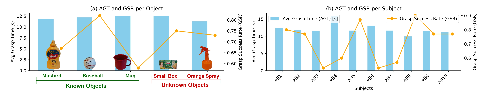
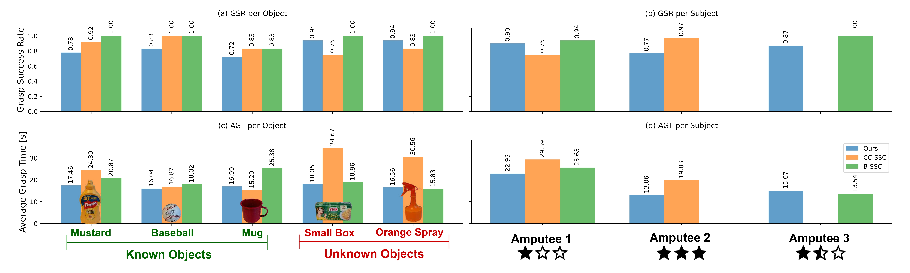
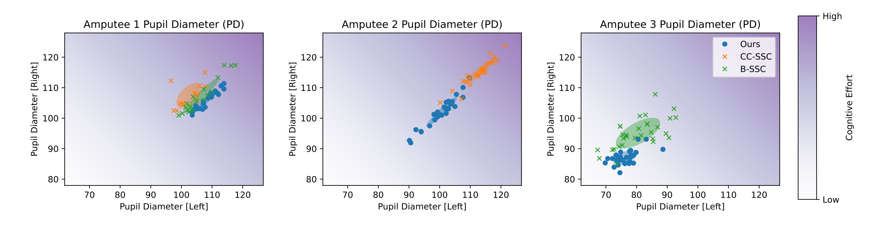

We present a series of demos performed by an able-bodied subject to showcase the effectiveness of our eye-in-hand prosthetic grasping system. In the following videos, we show the system in action with different objects and environments.
One of the most important research challenges in upper-limb prosthetics is enhancing the user-prosthesis communication to closely resemble the experience of a natural limb. As prosthetic devices become more complex, users often struggle to control the additional degrees of freedom. In this context, leveraging shared-autonomy principles can significantly improve the usability of these systems. In this paper, we present a novel eye-in-hand prosthetic grasping system that follows these principles. Our system initiates the approach-to-grasp action based on user's command and automatically configures the DoFs of a prosthetic hand. First, it reconstructs the 3D geometry of the target object without the need of a depth camera. Then, it tracks the hand motion during the approach-to-grasp action and finally selects a candidate grasp configuration according to user's intentions. We deploy our system on the Hannes prosthetic hand and test it on able-bodied subjects and amputees to validate its effectiveness. We compare it with a multi-DoF prosthetic control baseline and find that our method enables faster grasps, while simplifying the user experience.
We present a series of demos performed by an able-bodied subject to showcase the effectiveness of our eye-in-hand prosthetic grasping system. In the following videos, we show the system in action with different objects and environments.
We show grasp sequences performed by amputee subjects while using our system. Videos are recorded with the Tobii Pro Glasses 3 scene camera.
We show average grasp times (AGT) and grasp success rates (GSR) measured on able-bodied subjects. We show per object (a) and per subject (b) statistics.
After validating our approach, we conducted further experiments on 3 amputee subjects. We compare our method with Sequential Switching and Control (SSC) baselines. See our paper for comments on these results.
We propose to demonstrate the ease of use of our system by measuring the user's cognitive load while performing trials. We relate the cognitive load to pupil dilation (i.e., to the pupil diameter), inspired by previous relevant work in experimental psychology. Plots below show pupil dilation (PD) as the percentage of the diameter initially measured while amputees were performing the same actions with their other real hand. You can find more info and discussions in our paper!
We show a video demonstration of how pupil dilation changes while performing a grasp with our method.
@misc{stracquadanio2025bringgraspgeneratorleveraging,
title={Bring Your Own Grasp Generator: Leveraging Robot Grasp Generation for Prosthetic Grasping},
author={Giuseppe Stracquadanio and Federico Vasile and Elisa Maiettini and Nicolò Boccardo and Lorenzo Natale},
year={2025},
eprint={2503.00466},
archivePrefix={arXiv},
primaryClass={cs.RO},
url={https://arxiv.org/abs/2503.00466},
}